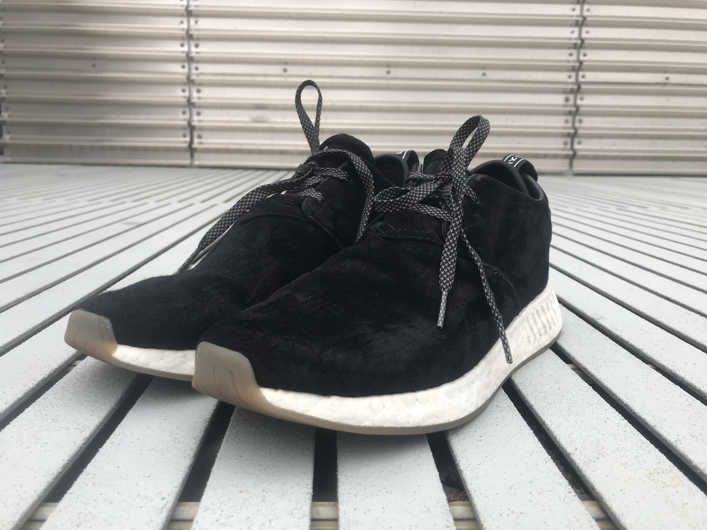
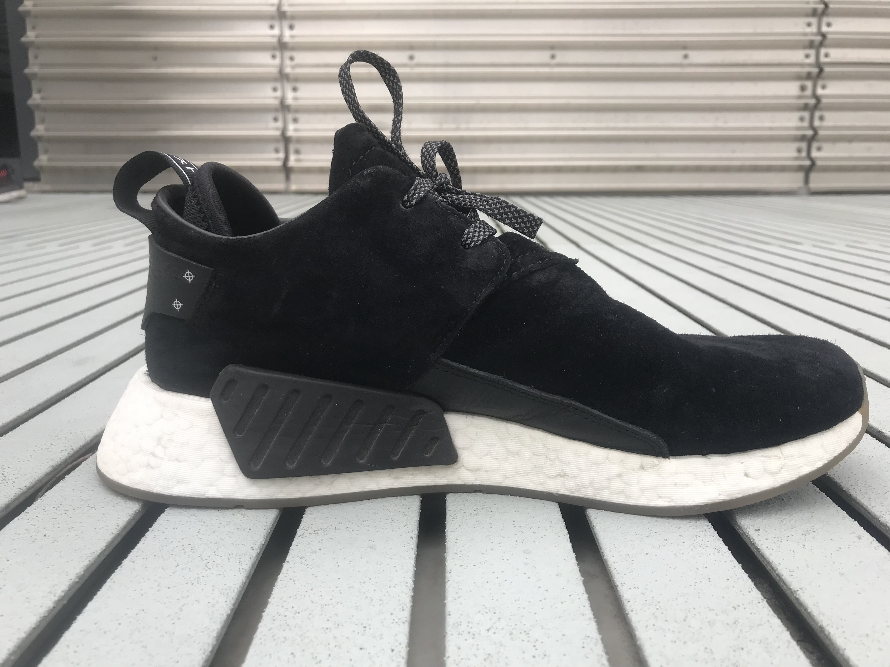
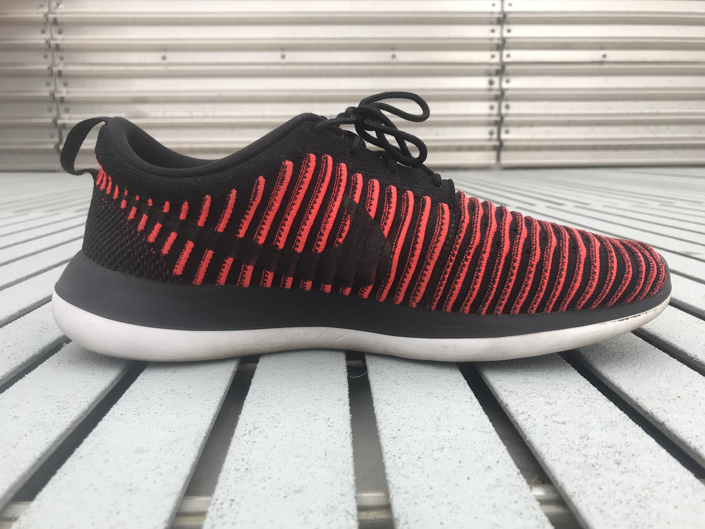
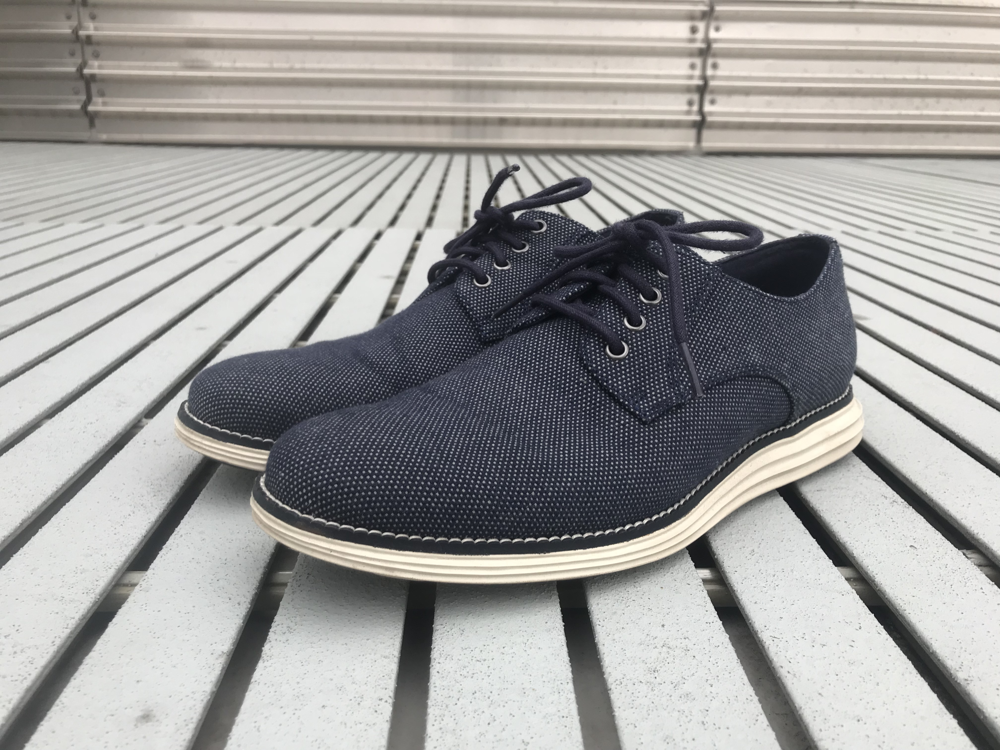
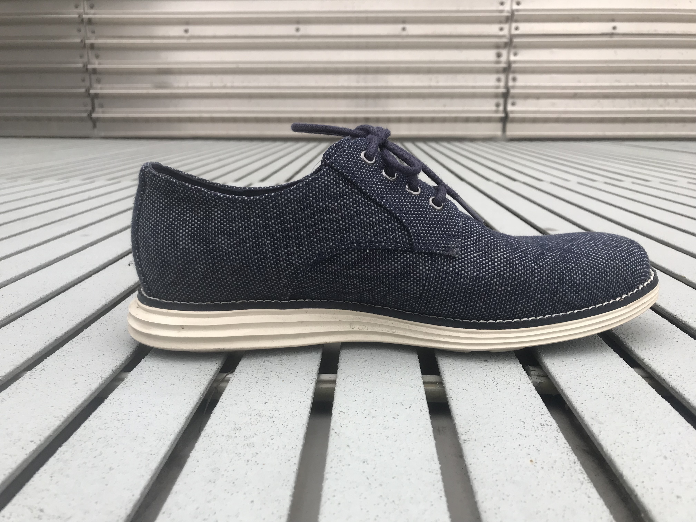

This website is about my shoes. Ever since my childhood, I've had an interest in buying different kinds of shoes. I am not a collector, but I like to have a wide variety to go with all of my outfits. I have noticed that I tend to gravitate more towards athletic shoes, although I am starting to explore other kinds too.
Everyday wear
Adidas NMD C_2


These shoes are my favotite shoes that I own as of now. They provide the same Boost feeling that the Adidas UltraBoost and PureBoost provide, but for a fraction of the cost. The upper is made from a suede material with origonal leather accents. I have worn them with casual outfits and semi-profesional outfits, and they go very well. The black color also makes it easy to wear with any color outfit.
Nike Flyknit Roshe Two

I bought these shoes almost a year ago, and they are still going strong. Nike Flykint shoes are known for being lightweight and extremely breatheable, which these shoes definiteky are. The color adds some much needed variation to my otherwise mostly pastel outfits. I have had countless discussions with my friends about whether these shoes are orange or red; I think they are orange. What do you think?
Special Wear
Cole Haan Original Grand Oxfords - Plain toe


I bought these shoes I wanted to have a semi-formal shoe. The break in period for these shoes was about 3 days of wearing, after which they feel very comfortable. I believe that a pair of Oxfords are essential to a shoe collection, as wearing sneakers all the time gets boring and repetitive, not to mention that some outfits should never be worn with sneakers. These add a slightly "grown-up" look to my otherwise teenage shoe collection.